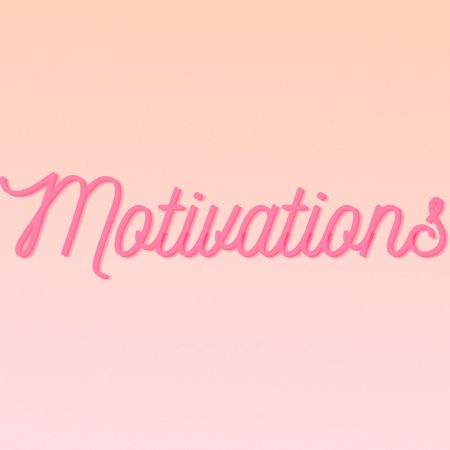
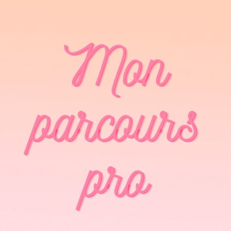
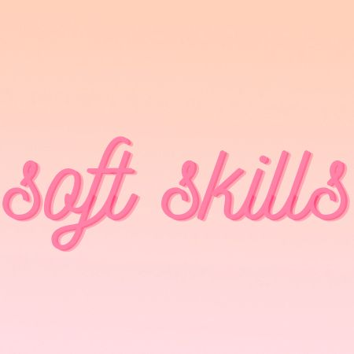

L'opportunité de rejoindre cette entreprise dans le domaine du 'low code' et du 'no code' me remplit d'enthousiasme. Ce qui me motive tout particulièrement, c'est la perspective de suivre une formation de 3 mois en amont de ma prise de fonction. Travailler sur des projets au sein de secteurs variés est une aspiration qui me pousse à vouloir intégrer cette entreprise. La formation me permettra d'acquérir des compétences solides et polyvalentes, indispensables pour aborder avec succès les défis que présente ce domaine en constante évolution.Ma créativité trouve ici un espace d'expression idéal. La période de formation en 'low code' et 'no code' ouvre des portes à l'exploration de nouvelles solutions et à la conception d'applications novatrices, en harmonie avec les besoins du marché.L'évolution rapide de ce secteur renforce ma motivation. Je suis impatient de me plonger dans la formation pour apprendre et m'adapter rapidement aux dernières avancées technologiques. La chance de contribuer activement à l'évolution de cette entreprise tout en élargissant mon propre champ de compétences me motive grandement.
En somme, cette opportunité aligne parfaitement avec mon désir d'apprentissage continu, d'innovation et de croissance professionnelle. Je suis prêt à relever le défi de cette formation intensive et à me lancer ensuite dans des projets captivants au sein du secteur du 'low code' et du 'no code.

Mon parcours professionnel présente une palette variée d'expériences qui ont façonné mon savoir faire et mes qualités humaines.
Pendant huit ans au sein de la Marine Nationale, j'ai acquis une expérience précieuse en matière de discipline, de leadership et de résolution de problèmes.
Cette période a été un pilier fondamental de ma croissance personnelle et professionnelle.
j'ai également eu l'opportunité d'embrasser une aventure entrepreneuriale enrichissante en tant que propriétaire d'un site de vente de vêtements, entre mai 2020 et mai 2022.
Cette expérience m'a offert une perspective unique sur la gestion d'entreprise, la satisfaction des clients et les défis du commerce en ligne.
Elle a renforcé mon sens des responsabilités et a affiné mes compétences en innovation et en gestion de projet.

Je me distingue par mon engagement envers un travail de qualité, évitant les erreurs grâce à ma minutie et ma précision.
Je valorise les perspectives des autres, favorisant une collaboration aisée. Je me révèle proactive, adaptable au changement,
et exprime mes opinions. Ses forces incluent une attitude positive envers la critique, la créativité, et l'analyse objective.
Je m'épanouit dans la conception, l'analyse et la recherche constante de perfection. Mon style d'apprentissage favorise l'expérimentation
pour maîtriser de nouvelles compétences. Mon énergie communicative se déploie dans ses actions, guidée par une attitude positive envers le changement.
Au-delà de mes compétences, j'excelle dans la gestion des relations humaines, créant un environnement propice à l'épanouissement collectif.
Découvrez tous mes softs skills